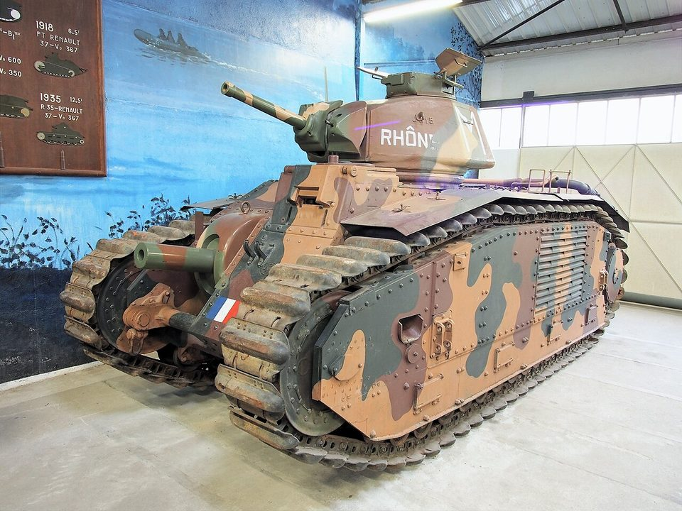
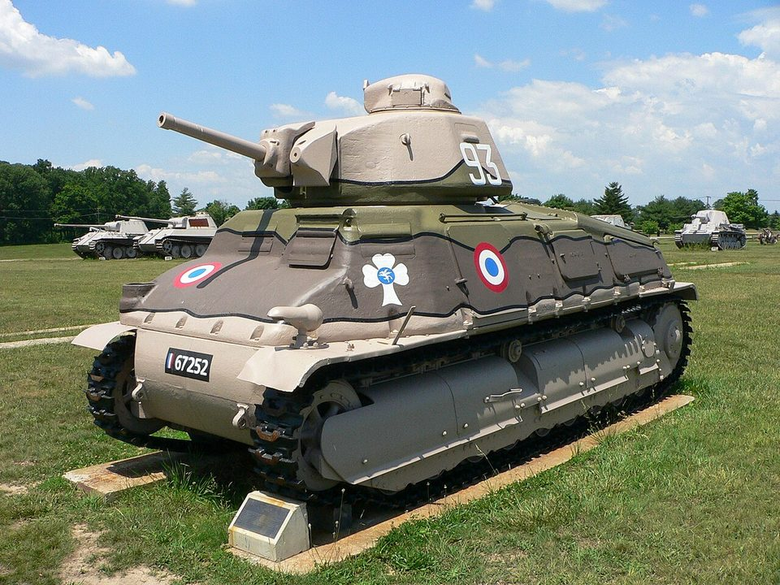

Todos los tanques › Por país › Francia
Tanques de Francia
Francia inventó la torreta giratoria con el Renault FT, tenía algunos de los carros mejor blindados de 1940 y apostó por la ligereza en la posguerra.
Primera Guerra Mundial
1916–1918 · 1 fichaEntreguerras
1919–1939 · 2 fichas-

Francia · 1936Char B1 bis
Carro pesado
-

Francia · 1936Somua S35
Carro de caballería